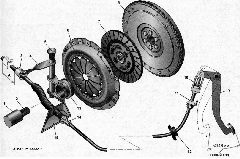

СцеплениеОсновные данные для контроля, регулировки и обслуживания сцепления
Моменты затяжки резьбовых соединений
На автомобиле установлено однодисковое сцепление сухого типа с центральной нажимной пружиной. Привод выключения сцепления — тросовый, беззазорный, с механизмом автоматической регулировки длины троса. Сцепление состоит из корзины (нажимного диска в сборе) и ведомого диска. Корзина представляет собой стальной кожух, в который установлены нажимная пружина и нажимной диск. Нажимной диск закреплен в кожухе на трех парах упругих пластин. Со стороны кожуха диск поджимается нажимной пружиной диафрагменного типа. Корзина сцепления прикреплена шестью болтами к маховику и закрыта алюминиевым картером. Между нажимным диском и маховиком установлен ведомый диск. К двум сторонам ведомого диска приклепаны фрикционные накладки. Для гашения крутильных колебаний в момент включения сцепления в ведомый диск встроен демпфер с шестью цилиндрическими пружинами. Ступица ведомого диска входит в шлицевое зацепление с первичным валом коробки передач. Педаль сцепления подвешена на оси и крепится к кузову через кронштейн. Верхняя часть педали сцепления выполнена как двуплечий рычаг. Па конце рычага выполнен палец, к которому присоединен трос привода выключения сцепления. Соединение выполнено через специальный храповый механизм, регулирующий длину троса (см. ниже). Поэтому в процессе эксплуатации автомобиля не требуется регулярно проверять и регулировать рабочий ход педали сцепления. Этот механизм также обеспечивает отсутствие зазора в приводе выключения сцепления. Трос привода выключения сцепления: 1 — пружинная фиксирующая скоба; 2 — механизм автоматической регулировки длины троса; 3 — кронштейн оболочки тpoca; 4 — резиновый чехол; 5 — оболочка троса; 6 — гофрированный чехол нижнего конца троса; 7 — резьбовой (нижний) наконечник троса Трос проложен в металлической оболочке с полиэтиленовым покрытием. Верхний торец оболочки имеет кронштейн, которым крепится к педальному узлу. Вертикальная поверхность кронштейна одновременно служит ограничителем хода педали сцепления. Па нее установлена резиновая пластина. Нижней торец оболочки троса закреплен в кронштейне, установленном на картере коробки передач. Нижний конец троса закрыт резиновым гофрированным чехлом. Трос соединен с рычагом вилки выключения сцепления через пластмассовый поводок, навинченный на резьбовой наконечник троса. Вилка выключения сцепления поворачивается в двух втулках. Верхняя втулка — пластмассовая, съемная, а нижняя — бронзовая, запрессованная в картер сцепления. При повороте вилки усилие передается на лепестки нажимной пружины через радиально-упорный шариковый подшипник (выжимной подшипник). Подшипник надет на муфту выключения сцепления, через которую он контактирует с вилкой привода выключения сцепления. Постоянное зацепление вилки и муфты обеспечивает пружина п-образной формы. Благодаря отсутствию зазора в приводе выключения сцепления обеспечивается постоянное прижатие муфты к лепесткам нажимной пружины, при этом выжимной подшипник непрерывно работает. В подшипник заложена смазка на весь срок его службы. Муфта выключения сцепления перемещается по направляющей втулке, надетой на первичный вал коробки передач и прикрепленной к картеру сцепления тремя болтами. В процессе эксплуатации накладки ведомого диска изнашиваются. Для компенсации этого износа в привод выключения сцепления встроен механизм автоматической регулировки длины троса. По мере износа накладок рычаг вилки выключения сцепления, поворачиваясь, натягивает трос. При этом сжимается пружина, расположенная во втулке механизма регулировки и поджимающая фиксаторы зубчатого наконечника троса. Фиксаторы освобождают наконечник, в результате чего он свободно вытягивается из поводка троса, компенсируя износ накладок диска. При нажатии педали сцепления верхний поводок смещается вверх. При этом фиксаторы обжимают зубчатый наконечник троса, не давая ему выдвигаться из корпуса механизма регулировки. 
Сцепление: 1 — направляющая втулка выжимного подшипника; 2 — первичный вал коробки передач; 3 — поводок троса; 4 — вилка выключения сцепления; 5 — втулка оси вилки; 6 — нажимной диск в сборе (корзина); 7 — ведомый диск; 8 — маховик; 9 педаль сцепления; 10 механизм автоматической регулировки длинны троса; 13 - муфта выключения сцепления (выжимной подшипник); 15 — кронштейн установленный на картере коробки передач; 14 — нижний наконечник оболочки тpoca; А — расстояние смещения новодка, проверяемое при установке троса (27 мм) Механизм регулировки длины троса: 1 — втулка; 2 — поводок; 3 — зубчатый (верхний) наконечник тpoca; 4 — фиксаторы наконечника троса; 5 кронштейн (с ограничителем хода педали сцепления) Примечание. Па автомобилях первых выпусков внутрь поводка устанавливалась пружина. |
|||||||||||||||||||||||||||||||||||||||